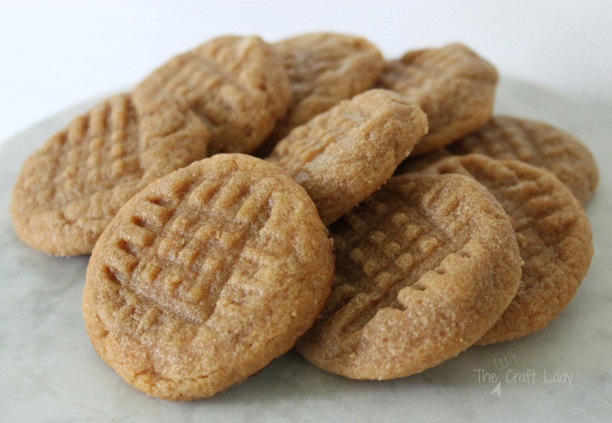
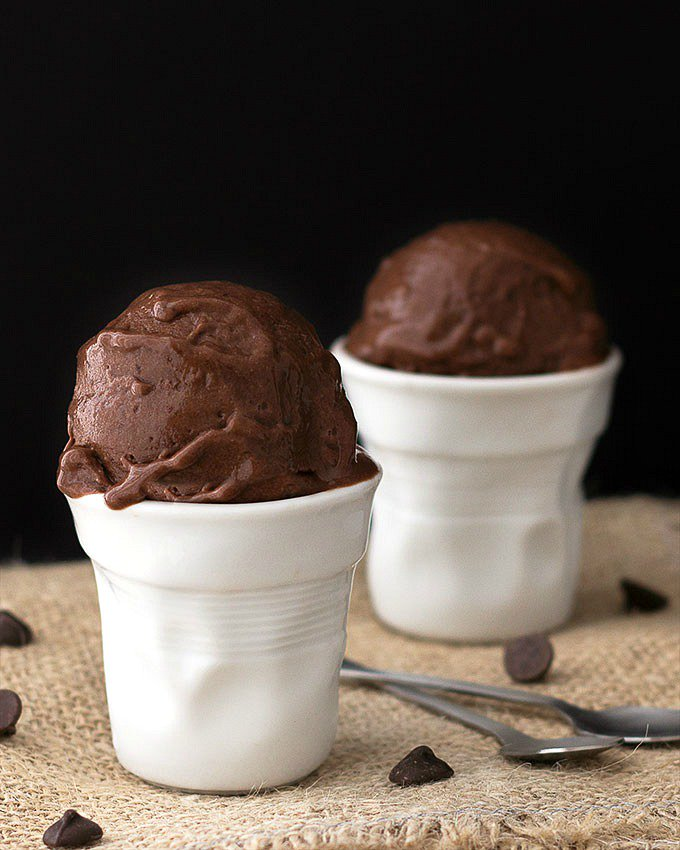
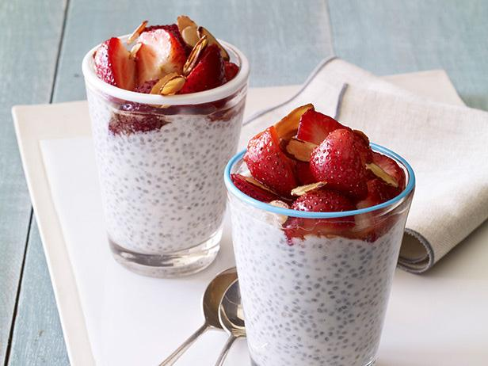
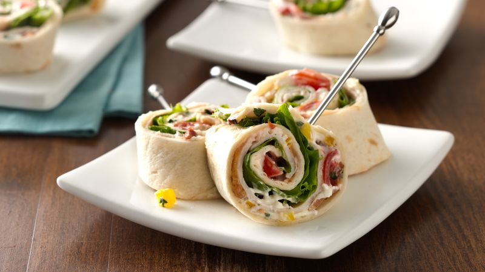

3 ingredient Peanut Butter Cookies
This recipe is for people who like peanut butter.

Ingredients
- 1/2 cup sugar
- 1 cup peanut butter
- 1 egg
click for more details
3 ingredient Chocolate Banana Ice Cream
Icecream made out of frozen bananas. It's also very versatile.
>
Ingredients
- 2 large frozen bananas, sliced and frozen
- 1 tablespoon cocao powder
- ⅛ teaspoon vanilla extract
Click here for more details
Chia Seed Pudding
> 
Ingredients
- 1 tablespoon chia seeds.
- 1/3 cup water.
1 tablespoon cocoa powder.
- 1 tablespoon peanut butter.
- Stevia or other sweetener, if desired.
Click here to watch a video on how to make it
Turkey roll- ups
> 
Ingredients
- 4 slices turkey breast.
- 4 teaspoons cream cheese.
- 4 pickles or cucumber strips.
- tomato.
- tortilla
Click here to watch a video on how to make it